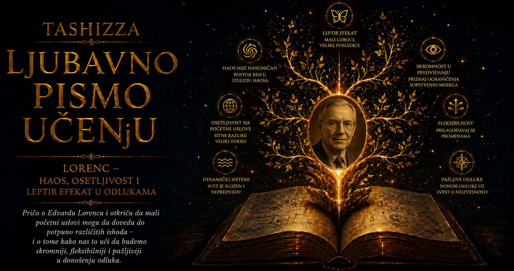

Ljubavno pismo učenju

Edvard Norton Lorenc pripadao je onoj retkoj vrsti naučnika čija tišina nije skrivala odsustvo strasti, nego izuzetnu sposobnost da se dugo i strpljivo ostane uz pitanje. Kolege su ga pamtile kao blagog, nenametljivog čoveka, zaljubljenika u matematiku, planine i misaone igre, koji nije osvajao prostoriju glasom, ali je umeo da primeti odstupanje pored kojeg bi drugi mirno prošli. Njegovo najpoznatije otkriće počelo je upravo takvim trenutkom pažnje: računarska simulacija nije ponovila očekivani rezultat, a Lorenc je odlučio da ne odbaci razliku kao kvar, grešku ili bezvrednu nepravilnost.
Rođen je 23. maja 1917. godine u Vest Hartfordu, u američkoj saveznoj državi Konektikat, u porodici u kojoj su obrazovanje, priroda i samostalno mišljenje imali važno mesto. Još kao dečak pokazivao je izuzetnu naklonost prema brojevima. Uživao je u računanju, šahovskim problemima i otkrivanju obrazaca, pa je kvadratne brojeve pamtio sa lakoćom koja je njegovoj okolini delovala gotovo neobično. Istovremeno je mnogo vremena provodio napolju, posmatrajući oblake i promene vremena, razvijajući vezu sa prirodom koja će ga pratiti kroz naučni rad i duga planinarenja.
Matematiku je studirao na Dartmut koledžu, gde je diplomirao 1938. godine, a zatim je nastavio obrazovanje na Harvardu i stekao zvanje magistra. Njegova akademska budućnost u početku je pripadala čistoj matematici, oblasti u kojoj su ga privlačili apstraktni odnosi i unutrašnja elegancija problema. Drugi svetski rat preusmerio je njegov život prema meteorologiji. Američko vojno vazduhoplovstvo trebalo je ljude sposobne da razumeju atmosferu i pripremaju vremenske prognoze, pa je Lorenc prošao meteorološku obuku na Masačusetskom institutu za tehnologiju.
Tokom rata služio je kao meteorološki prognostičar i neposredno se susreo sa posledicama odluka donetih na osnovu nepotpunih podataka. Vremenska prognoza mogla je uticati na bezbednost leta, tok operacije i živote ljudi, dok je atmosfera stalno pokazivala koliko se brzo pouzdan obrazac može pretvoriti u iznenađenje. To iskustvo spojilo je njegov matematički dar sa pitanjem koje će obeležiti čitavu karijeru: koliko daleko čovek može da vidi u budućnost sistema čija pravila poznaje, ali čije trenutno stanje nikada ne može sasvim da izmeri?
Po završetku rata vratio se na MIT i posvetio meteorologiji, iako je u nju ušao okolnostima koje prvobitno nije planirao. Doktorirao je 1948. godine radom o metodama primene dinamičkih jednačina na prognoziranje kretanja atmosfere, a zatim je ostao na institutu kao istraživač i nastavnik. Njegove rane studije bavile su se opštom cirkulacijom atmosfere i načinom na koji se Sunčeva toplota pretvara u energiju vetrova i oluja. Već tada ga je privlačila unutrašnja arhitektura procesa: kako se energija prenosi između velikih tokova i manjih vrtloga, kako povratni uticaji menjaju sistem i gde se pojavljuju granice njegovog ponašanja.
Na razvoj numeričke meteorologije snažno je uticao Džul Čarni, jedan od pionira računarskog prognoziranja vremena, koji je cenio Lorencovu sposobnost da složen problem svede na njegove presudne odnose. Čarni i njegovi saradnici pokazivali su da elektronski računari mogu rešavati jednačine atmosferskog kretanja dovoljno brzo da vremenska prognoza postane praktičan numerički zadatak. Lorenc je prihvatio mogućnosti koje su te mašine otvarale, ali je istovremeno zadržao oprez prema obećanju da će povećanje računarske snage jednog dana sasvim ukloniti neizvesnost.
Krajem pedesetih godina u njegovoj kancelariji našao se računar LGP-30, mašina veličine teškog kancelarijskog stola, sa memorijom i brzinom koje bi današnjem korisniku delovale gotovo nezamislivo skromno. Rezultate je ispisivala polako, stvarajući redove brojeva koje je istraživač morao pažljivo da čita i poredi. Lorenc je u toj ograničenoj mašini video laboratoriju za matematičke svetove. Menjao je početne vrednosti, posmatrao razvoj obrazaca i proveravao da li će se njihove putanje smiriti, ponoviti ili nastaviti da stvaraju nove oblike.
Njegova omiljena reč za takav rad bila je „igranje”, ali je ta igra počivala na velikoj matematičkoj disciplini. Lorenc je umeo da ukloni mnoštvo detalja i napravi mali model koji čuva suštinski odnos pojave, a zatim da ga ispituje sa radoznalošću čoveka koji nije unapred odlučio kakav odgovor mora dobiti. Jednostavni modeli u njegovim rukama nisu služili tome da predstave svu raskoš stvarne atmosfere. Oni su stvarali dovoljno pregledan prostor u kojem se moglo videti kako nekoliko povezanih pravila proizvodi neočekivano složeno ponašanje.
Presudan trenutak dogodio se tokom zime 1961. godine, kada je želeo da ponovi deo simulacije zasnovane na modelu sa dvanaest promenljivih. Umesto ponovnog pokretanja čitavog proračuna, uneo je brojeve sa ranijeg odštampanog izveštaja i nastavio od sredine. Štampač je vrednosti skraćivao na tri decimale, iako ih je računar u memoriji čuvao sa šest, pa je Lorenc nesvesno započeo novu simulaciju iz početnog stanja koje se sasvim neznatno razlikovalo od prethodnog.
Kada se vratio po rezultate, očekivao je gotovo istu putanju. Umesto nje ugledao je obrazac koji se postepeno udaljavao od prvobitnog i posle izvesnog vremena postao sasvim drugačiji. Prva pomisao mogla je biti da računar ne radi ispravno, ali je proveravanje pokazalo da mašina dosledno izvršava zadate jednačine. Lorenc je shvatio da je razliku proizvelo samo zaokruživanje početnih brojeva i da je sistem tu razliku neprekidno pojačavao.
Veličina njegovog naučnog karaktera pokazala se u reakciji na taj rezultat. Nije žurio da ga proglasi revolucijom, niti ga je uklonio zato što se nije uklapao u očekivanje. Mesecima je proveravao ponašanje modela, pojednostavljivao problem i tražio vezu između neperiodičnog kretanja i osetljivosti na početne uslove. Slučajnost mu je pružila neobičan podatak, dok su znanje, strpljenje i sposobnost da prepozna ozbiljno pitanje u sićušnom odstupanju pretvorili taj podatak u otkriće.
Ubrzo je složeniji atmosferski model zamenio sistemom od svega tri nelinearne jednačine, izvedenim iz proučavanja konvekcije fluida zagrevanog odozdo. Rezultate je 1963. godine objavio u časopisu Journal of the Atmospheric Sciences pod suzdržanim naslovom Deterministički neperiodični tok. Rad je sadržao jednu od ideja koje će promeniti nauku dvadesetog veka, ali je u početku ostao slabo primećen izvan meteorologije. Disciplinske granice bile su dovoljno čvrste da matematičari i fizičari godinama ne naiđu na revolucionaran članak objavljen u meteorološkom časopisu.
U tom radu nalazio se i oblik koji će kasnije postati poznat kao Lorencov atraktor. Putanja tri promenljive obavijala se oko dva područja, prelazila sa jednog na drugo i stvarala nove zavoje bez potpunog ponavljanja, nalik paru raširenih krila. Lorenc ga u to vreme nije posmatrao kao buduću ikonu popularne nauke. Za njega je predstavljao vidljiv dokaz da sistem može ostati ograničen, uređen sopstvenim jednačinama i istovremeno dugoročno nepredvidiv.
Čuveni leptir pojavio se kasnije i njegov nastanak bio je manje planiran nego što se danas obično pretpostavlja. Lorenc je u jednom ranom tekstu koristio galeba kao sliku sićušnog atmosferskog poremećaja, dok je naslov predavanja iz 1972. godine osmislio meteorolog Filip Merilis, pošto Lorenc organizatorima nije na vreme dostavio sopstveni naslov. Pitanje „Da li zamah leptirovih krila u Brazilu može izazvati tornado u Teksasu?” spojilo je krhkost leptira sa silinom oluje i pružilo javnosti sliku koju je bilo lako zapamtiti.
Lorenc je prema toj metafori ostao oprezniji od kulture koja ju je prihvatila. Znao je da leptir ne proizvodi energiju tornada i da se složen događaj ne može svesti na jedan udaljeni uzrok. Sitna promena početnog stanja mogla je doprineti jednoj putanji atmosfere, ali je pod drugačijim okolnostima mogla podjednako doprineti slabljenju ili izostanku oluje. Njegova pažljivost prema značenju ideje otkriva čoveka kome je preciznost bila važnija od slave upečatljive parole.
Iako je teorija haosa vremenom postala međunarodno poznata, Lorenc nije razvio javnu ličnost velikog naučnog proroka. Govorio je tiho, birao reči sa oprezom i prema senzacionalnim tumačenjima svojih rezultata odnosio se sa blagom uzdržanošću. Kolege su ga opisivale kao čoveka bez potrebe da dominira razgovorom, čija se sigurnost oslanjala na dubinu promišljanja. Njegova intelektualna snaga živela je u sposobnosti da postavlja jednostavna pitanja, a zatim im posveti onoliko vremena koliko zahtevaju.
Na MIT-u je bio cenjen i kao nastavnik, upravo zbog jasnog i smirenog načina objašnjavanja. Složene pojave nije zaklanjao terminologijom niti ih pretvarao u predstavu sopstvene učenosti. Gradio je objašnjenja kao što je gradio modele: uklanjao je suvišno, čuvao odnose koji nose pojavu i dopuštao da učenik postepeno ugleda obrazac. Studenti su mu dodelili priznanje za izuzetno podučavanje, potvrđujući da nenametljivost može imati snažan autoritet kada iza nje stoje znanje, strpljenje i poštovanje prema tuđem mišljenju.
Sa suprugom Džejn zasnovao je porodicu i imao troje dece, sina Edvarda, poznatog kao Ned, i ćerke Šeril i Nensi. Porodični život pratio je njegovu veliku ljubav prema prirodi. Lorenc je planinario, skijao i odlazio na duge pešačke ture, zadržavajući izuzetnu telesnu izdržljivost i u poznim godinama. Čovek koji je profesionalni život posvetio nestalnosti atmosfere istovremeno je sate provodio pod otvorenim nebom, čitajući oblake, teren i promene svetlosti bez želje da ih svede samo na jednačine.
Njegovo planinarenje imalo je neobičnu srodnost sa naučnim pogledom na svet. Sitna razlika u početnom pravcu može skijaša odvesti sa različitih strana izbočine, a zatim prema sasvim drugim delovima padine. Lorenc je upravo tom slikom u knjizi Suština haosa, objavljenoj 1993. godine, široj publici približio osetljivost na početne uslove. Pravila kretanja i oblik terena ostaju određeni, dok jedna gotovo nevidljiva razlika na početku postepeno menja čitavu kasniju putanju.
Njegov rad imao je neposredne posledice za meteorologiju. Lorenc je među prvima jasno razumeo vrednost pokretanja više prognoza iz blago različitih početnih stanja. Ako se simulacije razvijaju slično, meteorolog može imati veće poverenje u predviđanje; ako se brzo razilaze, raspon njihovih rezultata otkriva smanjenu predvidivost atmosfere. Iz takvog načina mišljenja razvilo se ansambl-prognoziranje, danas nezaobilazan deo rada velikih svetskih meteoroloških centara.
Naučna priznanja stigla su postepeno, kako su fizičari, matematičari, biolozi i istraživači drugih oblasti počeli da otkrivaju srodno ponašanje u sopstvenim sistemima. Lorenc je dobio Rosbijevu medalju Američkog meteorološkog društva, Krafordovu nagradu, Kjoto nagradu i brojna druga međunarodna priznanja, a izabran je i u Nacionalnu akademiju nauka Sjedinjenih Država. Počasti su potvrđivale širinu njegovog doprinosa, ali nisu promenile njegov način ophođenja. Ostao je zahvalan što je ideja pronašla put do drugih istraživača, bez potrebe da sebe postavi u središte priče.
Dugo posle formalnog penzionisanja nastavio je da dolazi na MIT, razvija modele i razmišlja o granicama prognoziranja. Posebno ga je zanimalo gde bi dodatna meteorološka merenja mogla najviše da poprave buduću prognozu, jer u osetljivom sistemu svaki novi podatak nema jednaku vrednost. Ta istraživanja vodila su prema savremenim metodama ciljanog posmatranja i asimilacije podataka, kojima se nastoji da ograničeni merni resursi budu usmereni na oblasti najvažnije za razvoj neizvesnosti.
Lorenc je razmišljao i o filozofskim posledicama sveta koji može biti određen zakonima, a ipak ostati nepredvidiv. Na pitanje šta takav determinizam znači za slobodnu volju odgovarao je karakteristično duhovito: u slobodnu volju vredi verovati svim srcem, jer smo, ukoliko postoji, izabrali ispravno, a ukoliko ne postoji, drugačiji izbor ionako nismo mogli napraviti. U toj dosetki susreću se njegova ljubav prema logičkim problemima, skromnost prema granicama znanja i sposobnost da ozbiljno pitanje sačuva od nepotrebne težine.
Umro je 16. aprila 2008. godine u svom domu u Kembridžu, u devedesetoj godini, od posledica raka. Iza njega su ostali porodica, generacije studenata, radovi iz meteorologije i teorije dinamičkih sistema, kao i nov način razmišljanja o granici između reda i neizvesnosti. Njegovo ime postalo je nerazdvojno od leptira, iako je stvarni čovek iza metafore bio tiši, složeniji i zanimljiviji od popularne slike.
Lorencova životna priča dragocena je upravo zato što pokazuje kako nastaju velika otkrića. Slučajnost je otvorila vrata kada je zaokružen broj proizveo neočekivanu putanju, ali je kroz ta vrata mogla proći samo pripremljena radoznalost. Bile su potrebne godine matematičkog obrazovanja, iskustvo ratnog prognostičara, razumevanje atmosfere, spremnost na rad sa nesavršenim računarima i karakter koji nepravilnost nije uklanjao samo zato što remeti očekivani rezultat.
U vremenu koje često nagrađuje brzinu odgovora i samouverenost nastupa, Lorenc podseća na autoritet tihe pažnje. Nije pokušavao da prirodu prinudi da potvrdi njegovu pretpostavku; ostao je dovoljno skroman da sasluša ono što mu govori mala razlika među brojevima. Njegov primer pokazuje da učenost sazreva onda kada čovek ume da prepozna granicu sopstvenog predviđanja, a radoznalost onda kada pred neočekivanim rezultatom ne žuri da zaštiti sopstvenu sigurnost.
Leptirova krila zato mogu čuvati i jednu ljudsku priču o učenju. Velike promene u znanju ponekad počinju gotovo nevidljivim odstupanjem, ali njihova veličina zavisi od uma koji će ga primetiti, proveriti i razumeti. Edvard Lorenc promenio je pogled na složene sisteme jer je umeo da vidi strukturu u nepravilnosti i duboko pitanje u nekoliko izgubljenih decimala. Njegova najlepša pouka ostaje jednostavna i zahtevna: pažljivo posmatranje sveta počinje spremnošću da zastanemo upravo tamo gde se dogodilo nešto što nismo očekivali.